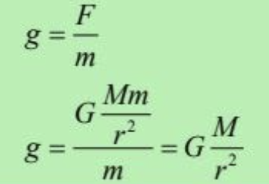
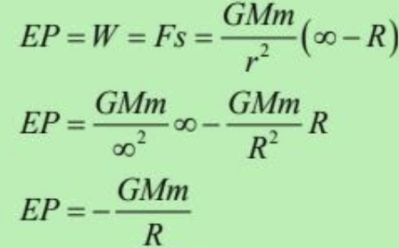
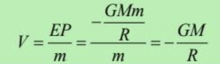

Gaya gravitasi adalah gaya tarik menarik yang terjadi antara semua partikel yang memiliki massa di semesta.
Gaya gravitasi antara dua benda merupakan gaya tarik menarik yang besarnya berbanding lurus dengan massa masing-masing benda dan berbanding terbalik dengan kuadrat jarak antara keduanya.
Medan gravitasi adalah ruang di sekitar benda bermassa yang dapat menarik benda bermassa lain dalam ruang itu (membuat benda bermassa lainnya mengalami gaya gravitasi).
Kuat medan gravitasi didefinisikan sebagai gaya gravitasi per satuan massa pada suatu massa uji m.
Energi potensial gravitasi adalah usaha yang dilakukan oleh sebuah massa uji m dari sebuah titik yang jauh tak berhingga untuk menuju sebuah titik berjarak R dari benda bermassa M.
Potensial gravitasi didefinisikan sebagai energi potensial gravitasi per satuan massa uji m.
